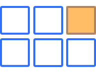

What is the CSS Grid?
A two-dimensional layout system, controlling layout both in rows and columns.
Grid Container
The container that holds the entire CSS grid. It is the element that has display: grid or inline-grid property on it.
.grid-container {
display: grid;
}
Grid Item
Any element that is a direct child of a grid container.
.grid-container {
display: grid;
}
Grid Item 1
Grid Item 2
Grid Item 3
Grid Line
The vertical and horizontal lines that divide the grid and separate the columns and rows.
Their numbering starts with 1 (not 0).

Grid Cell
A single unit of a CSS grid.
Grid Area
Rectangular space surrounded by four grid lines.
A grid area can contain any number of grid cells.
Grid Track
The space between two grid lines.
This space can be horizontal or vertical.

Row and Columns
Grid Row
A horizontal track of a grid.

Grid Column
A vertical track of a grid.
Gutter / Gap
The space between rows and columns in a grid.

Example
.grid-container {
display: grid;
grid-template-columns:repeat(3, 1fr);
}
Grid Item 1
Grid Item 2
Grid Item 3
grid-template-columns
&
grid-template-rows
A way to define the number of rows and columns as well as their size.
CSS length unit:
fr
-
What is
fr? -
What does
repeat()do? -
Example:
repeat(4, 25%)vs.repeat(4, 1fr)with
grid-column-gap: 10px?
repeat(4, 25%)
repeat(4, 1fr)
An Explicit Grid
.grid-container {
display: grid;
grid-template-columns: 1fr 2fr 1fr;
grid-template-rows: 4fr 1fr 2fr;
}
An Explicit Grid
with dynamic row and column size
.grid-container {
display: grid;
grid-template-columns: minmax(auto, 40%) 1fr 12rem;
grid-template-rows: minmax(75px, auto) minmax(75px, 150px) auto;
}
(very very very very very very long content)
An Implicit Grid
.grid-container {
display: grid;
grid-template-columns: repeat(3, 1fr);
}
(very very very very very very long content)
(open link or use next slide)
(press down to hide this)
Browser Dev Tools

- Open the DevTools (F12, Right-Click + Inspect)
- Click on "grid"
Grid Lines
Grid items are positioned using grid lines.

Positioning
.item-1 {
grid-row: 2/3;
grid-column: 2/3;
}
.item-3 {
grid-row: 3/4;
grid-column: 3/4;
}
Item 1
Item 2
Item 3
Properties
-
grid-rowgrid-row-startgrid-row-end
-
grid-columngrid-column-startgrid-column-end
(open link or use next slide)
(press down to hide this)
Template Areas
What is
grid-area
again?
grid-row-startgrid-column-startgrid-row-endgrid-column-end
Template Areas (v2)
.container {
display: grid;
grid-template-columns: repeat(3, 1fr);
grid-template-rows: repeat(4, 1fr);
grid-template-areas:
"header header header"
"sidebar content-1 content-1"
"sidebar content-2 content-3"
"footer footer footer";
}
.sidebar {
grid-area: sidebar;
}
…
Flex vs. Grid
Flex
- single direction, main and cross axis
- primarily for row or column layouts (with wrapping)
- flow and alignment defined on container
- layout and sizing defined by items
- items shrink/grow based on space available
Grid
- two-dimensional, rows and columns
- manage rows and columns simultaneously
- full layout defined on container
- spacing in both directions (gap)
- items placed inside grid cells
Go to the code sandbox and fill up the available space with the person tiles. Think of mobile, tablet and desktop widths. Align the previously built person tiles using a CSS grid layout.
Hint: Try if you can make the layout responsive without media queries.